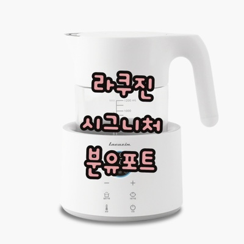

노시부 콧물 흡입기
노시부 콧물 흡입기 장점
- 분해가 쉬워 청결 유지관리가 쉬움
- 다른 콧물흡입기보다 콧물 흡입이 잘 되어 아이들이 정말 시원해함
- 코 안쪽으로 잘 흡입해주어 일반 코 뻥보다 효과 좋음
- 사용 방법이 간단하여 설명서 없이도 바로 사용 가능
- 세기 조절이 가능하여 신생아, 아기, 어린이에게 맞춰 조절이 가능
라쿠진 시그니처 분유포트
라쿠진 분유포트 장점
- 내가 설정한 온도로 24시간 보온이 가능
- 한밤중에도 LED 디스플레이 불빛을 수유 등으로 사용 가능
- 추출구 안심 설계로 사용 중 충격에 의한 추출구 방지